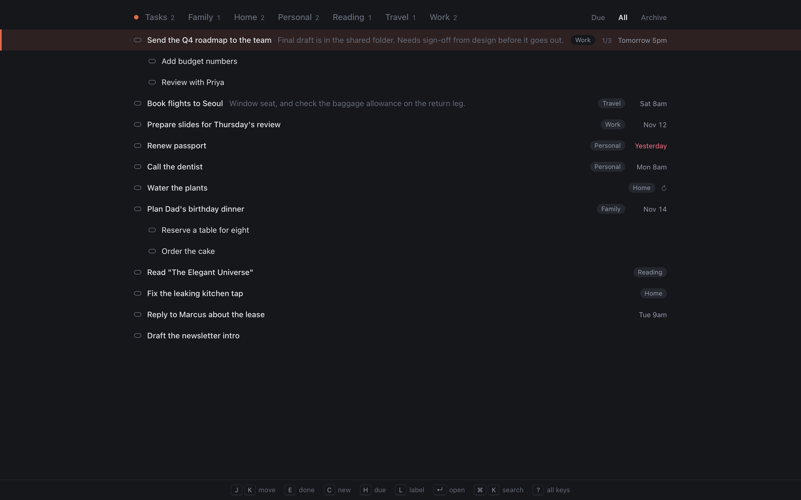
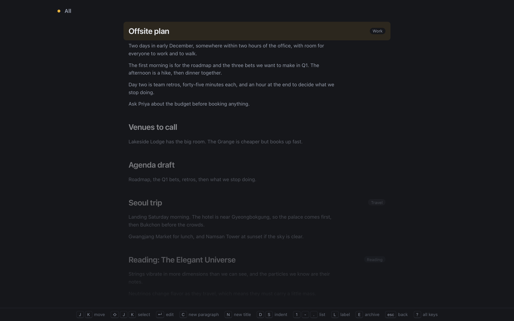

Tasks and notes that keep up with you.
Neutrino is a to-do list and a notebook for Mac, built for the keyboard. Every action is one key, every key responds instantly, and everything you write is plain text that you own.
Download on the Mac App StoreFree, for macOS 13 or later

One key for everything
J and K move through your list. C writes something new, E finishes it, H sets a due date and L adds a label. ⌘ K searches every task, note, link and command.
Due dates in plain words
Type tomorrow, 10am thu or 3 days and Neutrino works out the rest, even before you finish the word.
Notes, right beside your tasks New in 1.1
Press G N for Notes and G T to come back. A note is a title and a body, and notes nest like tasks. Open one and the page runs on through all of them, so you can read and write without going back to a list. T turns a note, or one paragraph of it, into a task that links back to it.

Also new in 1.1
- Reminders and repeats. R snoozes a task until later, or repeats it: every other sunday, every day at 5pm.
- An inbox. The Tasks tab holds what you haven't labeled yet. Label a task and it moves to that label's tab, and G A shows everything.
- Links behind a paperclip. ⌘ O opens a link or attaches one, and G O lists every link you've kept.
- Labels your way. G L renames, merges and orders them, and each label's tab keeps its own order.
- Files where you want them. Keep your tasks and notes in any folder, such as Google Drive. If two Macs change the same file, Neutrino merges the changes.
Your tasks and notes are text files
Neutrino keeps them in two markdown files. Open them in any editor, or keep them in a synced folder to use them on more than one Mac. No account, no subscription, nothing collected.